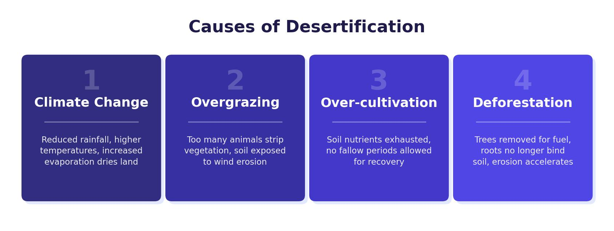

The Sahara Desert: Location & Features
The Sahara Desert is located in the northern part of Africa, stretching from the west coast of Morocco, Mauritania and Senegal to the east coast of Egypt, Sudan and Eritrea. The Tropic of Cancer runs through the desert, and it spans 11 countries in total. At around 9,065,000 km², the Sahara is similar in size to the United States.
Only about 25% of the Sahara is sand dunes. Most of the landscape is stony desert. Just 2% of the land (around 200,000 km²) can be used for farming. Approximately 4 million people live in the Sahara region, with the largest city being Nouakchott in Mauritania.

The Sahel
The Sahel is a semi-arid region that borders the southern edge of the Sahara. It stretches across countries including Mali, Niger, Chad and Sudan. The Sahel receives more rainfall than the Sahara itself but is particularly vulnerable to desertification — the process of fertile land turning into desert over time.
Development Opportunities in the Sahara
Despite the harsh conditions, there are four main development opportunities in the Sahara Desert. These bring economic benefits to countries like Morocco and help improve the quality of life for local people.
The Sahara’s hot, sunny climate makes it ideal for solar energy production. The Noor Power Plant in Morocco is the largest solar farm in the world and provides electricity for around 1 million people. Solar energy improves quality of life by powering homes and supporting manufacturing industries.
Morocco is a major producer of phosphate, which is used in fertilisers. In 2018, phosphate mining generated profits of £6 billion and employed 23,000 people. The development of cobalt mines is also growing in importance due to the rising demand for electric vehicle batteries. Phosphate is transported to ports for export by conveyor belt.
Tourism attracts many visitors to Morocco for activities such as sand boarding, camel rides and staying with local Berber communities. Tourism generates around £9 billion per year for Morocco. This money is spent directly in the country, providing taxes that the government can invest in schools, hospitals and sanitation.
Farmers in the Sahara region grow and export products like watermelons and dates. In 2019, Morocco exported around 165 million kilograms of watermelon. Export income allows farmers to earn more money and pay more tax, which the government can then invest in development projects.
Challenges in the Sahara
Living and working in the Sahara presents three major challenges. These difficulties are interconnected — extreme heat worsens water shortages, and poor access makes it harder to deliver water supplies.
- Extreme temperatures — very high summer temperatures make survival difficult for people, plants and animals. The heat affects physical health and makes growing crops extremely challenging. Farmers need large amounts of water for irrigation to support any agriculture.
- Inaccessibility — the remote location means few roads and limited infrastructure. Extreme temperatures can melt tarmac and damage roads, while wind-blown sand can cover roads entirely, making transport of people and goods very difficult.
- Water supply — rainfall in the Sahara is less than 250 mm per year, making water extremely scarce. This limited supply is made worse by increasing demands from a growing population, crop irrigation, the mining industry and Western tourists.
The three challenges in the Sahara are closely linked. Extreme heat increases water demand, while poor accessibility makes it harder to bring in supplies. Population growth in southern Morocco puts additional pressure on all three issues.
Desertification: Causes
Desertification is the process of fertile land turning into desert over time. Areas on the edge of hot deserts — such as the Sahel — are especially at risk. Around a third of the world’s land is threatened by desertification. The causes are both human and physical, and all of them lead to a loss of soil nutrients, allowing sand and dust to take over.
Human Causes
Trees are cut down for building homes, heating and firewood for cooking. In many poorer countries, people rely on wood as their primary fuel source. Once trees are removed, the soil is exposed and easily washed or blown away (soil erosion), making it impossible for vegetation to grow back. Burning fuelwood also causes health problems, especially breathing difficulties.
Over-cultivation occurs when too much farming takes place on one piece of land, by both subsistence farmers and commercial farms. The land becomes barren and infertile, at risk of soil erosion from wind and heavy rainfall. As the land degrades, farmers move to new areas and the problem spreads. Modern farming machinery creates larger fields, removing trees and natural vegetation.
Overgrazing happens when there are too many animals feeding on the land. Vegetation is eaten faster than it can regrow, leaving the ground exposed and infertile. Increased demand for food drives cattle farming, which damages vegetation and leads to soil erosion. As with over-cultivation, farmers then move to new land and the cycle repeats.
More people means more demand for food, land for farming and wood for fuel. Traditional, less intensive methods of farming decline under pressure. Nomadic tribes that once moved around may settle in one area, putting sustained pressure on the land. Marginal land that is less suitable for farming is used, and cities, towns and villages must expand to accommodate more people.
Physical Causes
Climate change is the main physical cause of desertification. As global temperatures rise, areas surrounding existing deserts experience increased temperatures and reduced rainfall. Heat causes increased evaporation, leading to drought conditions. Drought causes crops to fail and animals to die, which in the worst cases leads to famine. People are forced to move, putting more areas at risk. Less natural vegetation means less protection for the soil, which dries out and is eroded by wind and sudden heavy rainfall.
All causes of desertification — both human and physical — share a common outcome: soil erosion. Vegetation binds soil together. When vegetation is lost, the soil becomes loose and dry, and is blown away by wind or washed away by heavy rainfall. What remains is stones, dust and sand — turning the area into desert.
Managing Desertification
There are three main strategies used to reduce and reverse desertification. Each is designed to protect the soil, reduce erosion and support vegetation growth.
Appropriate technology includes tools and systems that are simple to use, affordable to buy or build, and cheap to maintain. The Upesi stove is a key example. Used in Burkina Faso and other Sahel countries, it uses a clay oven that retains heat, meaning far less wood is needed for cooking. This reduces deforestation and therefore reduces the risk of soil erosion and desertification. The cleaner burning process also decreases indoor air pollution and respiratory infections, while cutting CO₂ emissions.
Bunds are low stone walls introduced in the Sahel region. Stones are planted in lines parallel to slopes. They slow down the flow of rainwater, allowing water to collect behind the bund and soak into the ground. They also stop wind at ground level from picking up soil and carrying it away. Any material that collects against a bund can be used to support new vegetation growth. In Niger alone, around 250,000 hectares of farmland are lost to desertification each year — bunds help to slow this process.
Afforestation involves planting trees to protect and bind soils. The most ambitious example is the Great Green Wall project in Northern Africa — a proposed 7,775 km belt of trees covering 11.6 million hectares. Trees bind soil together with their roots, stopping it from being blown or washed away. Afforestation also helps tackle climate change through CO₂ absorption and can provide food from fruit-bearing trees.